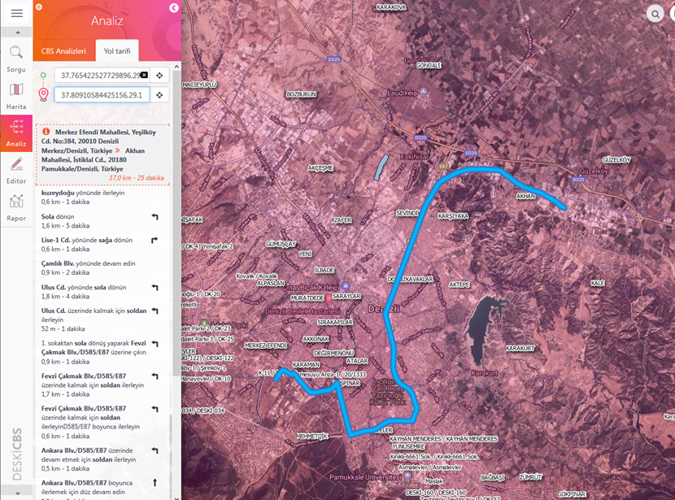

Bu analiz çizgisel coğrafi tabakalarda seçilen iki nokta arasındaki en kısa mesafeyi harita üzerinde ve liste olarak göstermeye yaramaktadır.
Kullanımı :
1- Başlangıç kutusunun içine tıklandıktan sonra ya harita üzerinde bilinen bir noktaya tıklanır, ya yazı ile adres girilir, ya da kutunun sağındaki butona basılarak o onda bulunulan konum otomatik olarak kutuya yazdırılır.
2- Aynı işlemler bitiş kutusu için de yapılır ve konum kutuya yazdırılır.
3- İki kutuya da değer girildiği anda harita ekranında yol güzergahı çizdirilir.
4- Yol tarifi listesi ise panel de görüntülenir.
 Yeni bir yol tarifi işlemine başlamak için herbir kutunun içindeki x butonlarına tıklanarak kutu, harita ekranı ve yol tarifi listesi temizlenir ve yeni girişe hazır hale gelir. Ayrıca sağ alt köşedeki Info butonun yanındaki "Yenile" butonuna basılırsa ekran temizlenecektir.
Yeni bir yol tarifi işlemine başlamak için herbir kutunun içindeki x butonlarına tıklanarak kutu, harita ekranı ve yol tarifi listesi temizlenir ve yeni girişe hazır hale gelir. Ayrıca sağ alt köşedeki Info butonun yanındaki "Yenile" butonuna basılırsa ekran temizlenecektir.
Mobil cihazlarda başlangıç noktası olarak o anki konum otomatik olarak başlangıç kutusuna yazdırılır. Dolayısla sadece bitiş konumunu göstermek yeterli olacaktır.
"Temizle" butonu ise en kısa yol çizgisinin ekrandan temizlenmesini sağlamaktadır.
